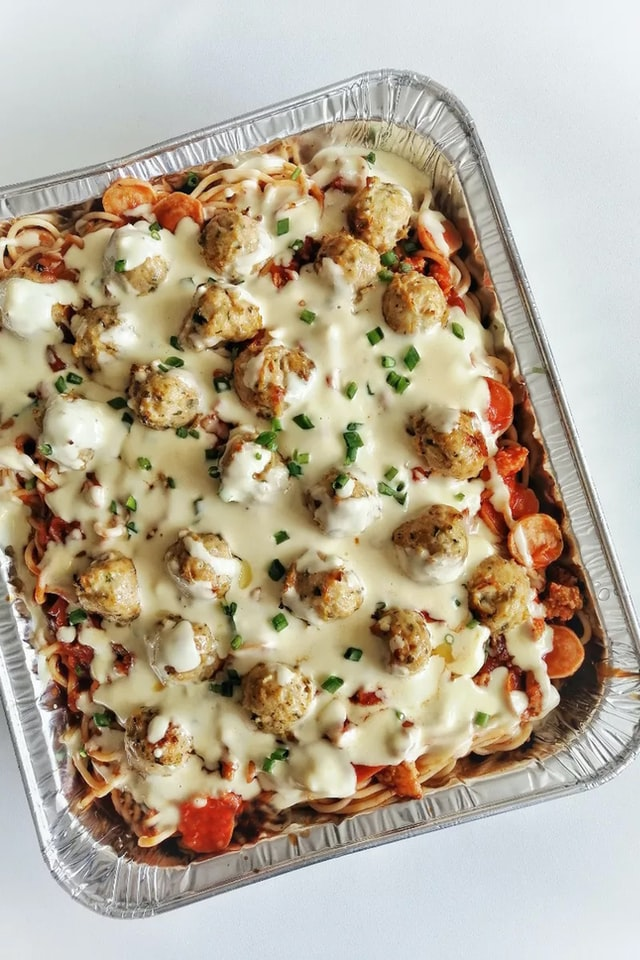

Lasanha

Descrição:
Um prato saboroso, fácil de preparar, rápido para fazer. Ideal para todos os momentos.
Ingredientes:
- 1 pacote de macarrão
- 1 libra de carne moída magra
- sal e pimenta a gosto
- 1 frasco de molho de espaguete
- 1 dente de alho picado
- ½ libra de queijo mussarela ralado
- ½ libra de queijo cheddar ralado
- 1 litro de queijo ricota
Passos:
- Leve uma panela grande com água levemente salgada para ferver. Adicione o macarrão e cozinhe por 8 a 10 minutos.
- Pré-aqueça o forno a 350 graus F (175 graus C). Em uma frigideira grande em fogo médio-alto.
- Em uma tigela média, misture a mussarela, o queijo cheddar e a ricota; mexa bem.
- Asse em forno pré-aquecido por 30 minutos ou até que o queijo derreta e borbulhe.